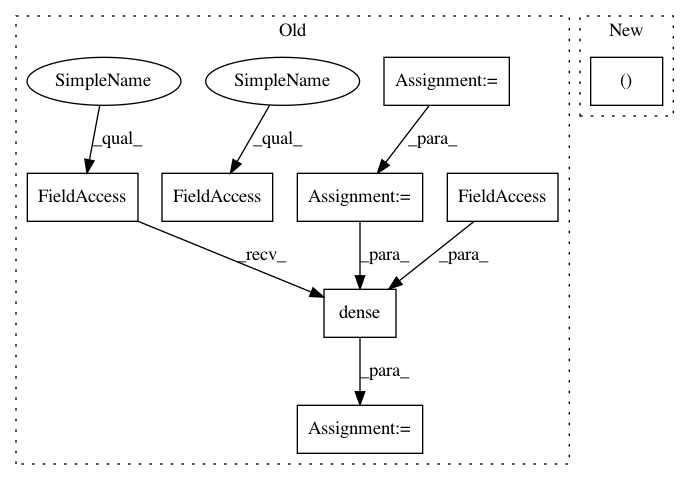

134d00c07c5f2bfb6e79811e9397e5a111635f91,art/attacks/spatial_transformation_unittest.py,TestSpatialTransformation,test_tfclassifier,#TestSpatialTransformation#,230
Before Change
output_ph = tf.placeholder(tf.int32, shape=[None, 10])
// Define the tensorflow graph
conv = tf.layers.conv2d(input_ph, 1, 7, activation=tf.nn.relu, kernel_initializer=tf_initializer_w_conv2d,
bias_initializer=tf_initializer_b_conv2d)
conv = tf.layers.max_pooling2d(conv, 4, 4)
flattened = tf.contrib.layers.flatten(conv)
// Logits layer
logits = tf.layers.dense(flattened, 10, kernel_initializer=tf_initializer_w_dense,
bias_initializer=tf_initializer_b_dense)
// Train operator
loss = tf.reduce_mean(tf.losses.softmax_cross_entropy(logits=logits, onehot_labels=output_ph))
// Tensorflow session and initialization
sess = tf.Session()
sess.run(tf.global_variables_initializer())
After Change
:return:
// Build TF model
loss, logits, input_ph, output_ph = get_model_tf()
// Tensorflow session and initialization
sess = tf.Session()
In pattern: SUPERPATTERN
Frequency: 3
Non-data size: 8
Instances
Project Name: IBM/adversarial-robustness-toolbox
Commit Name: 134d00c07c5f2bfb6e79811e9397e5a111635f91
Time: 2019-02-11
Author: beat.buesser@ie.ibm.com
File Name: art/attacks/spatial_transformation_unittest.py
Class Name: TestSpatialTransformation
Method Name: test_tfclassifier
Project Name: analysiscenter/batchflow
Commit Name: 6dad66511b8432570eb53b67b8fd889913ac15e3
Time: 2017-11-01
Author: rhudor@gmail.com
File Name: examples/opensets/mnist_model2.py
Class Name: MyModel
Method Name: _build
Project Name: IBM/adversarial-robustness-toolbox
Commit Name: 134d00c07c5f2bfb6e79811e9397e5a111635f91
Time: 2019-02-11
Author: beat.buesser@ie.ibm.com
File Name: art/attacks/spatial_transformation_unittest.py
Class Name: TestSpatialTransformation
Method Name: test_tfclassifier
Project Name: OpenNMT/OpenNMT-tf
Commit Name: 8566b142ddf39eb999e6765a216d54c957f526a3
Time: 2019-04-01
Author: guillaume.klein@systrangroup.com
File Name: opennmt/models/sequence_classifier.py
Class Name: SequenceClassifier
Method Name: _call